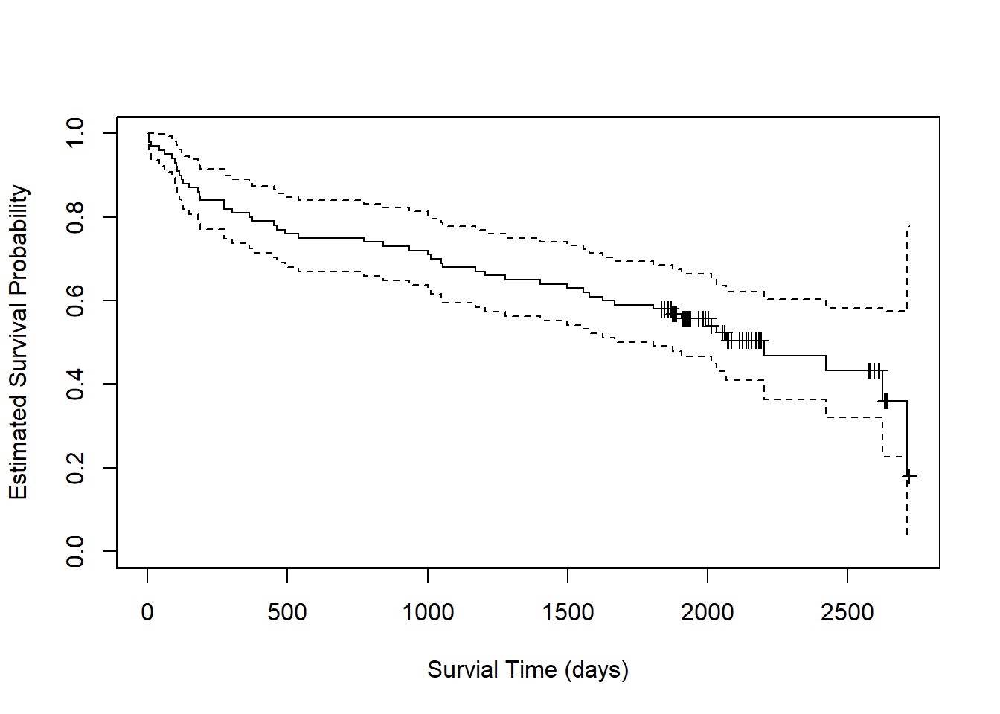
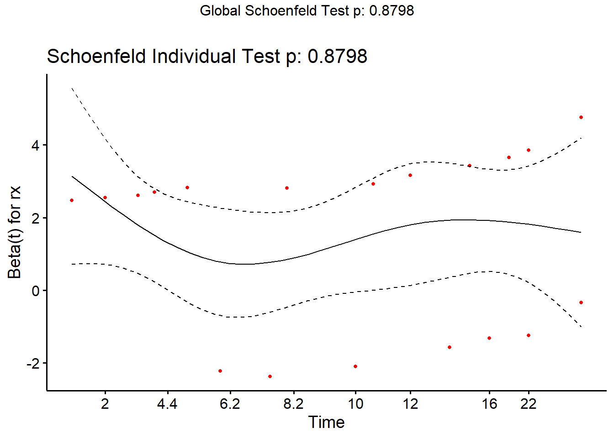
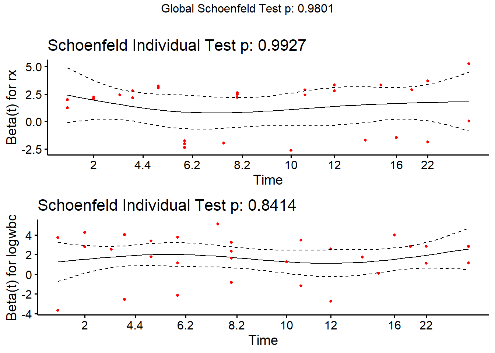
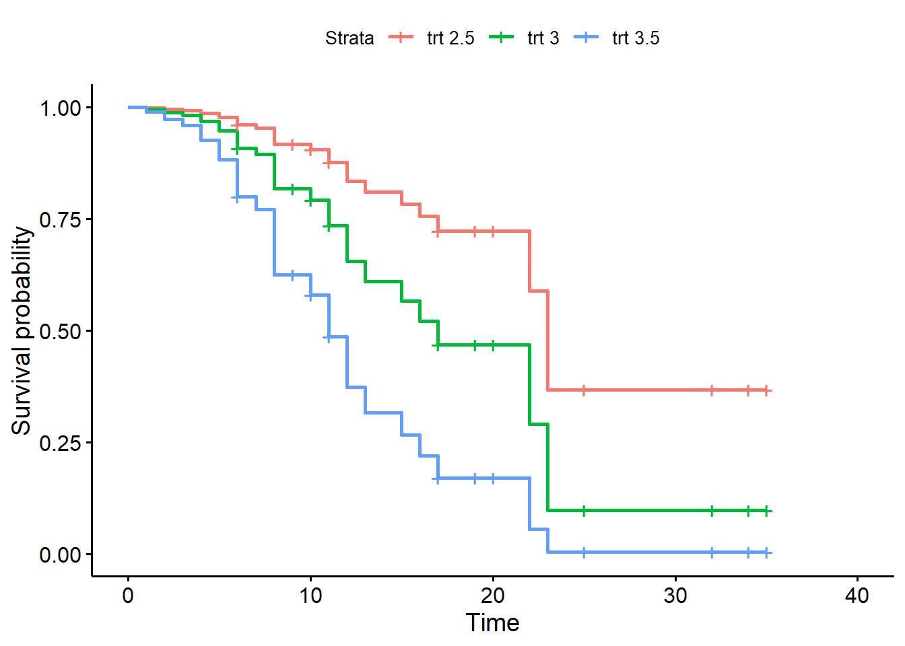
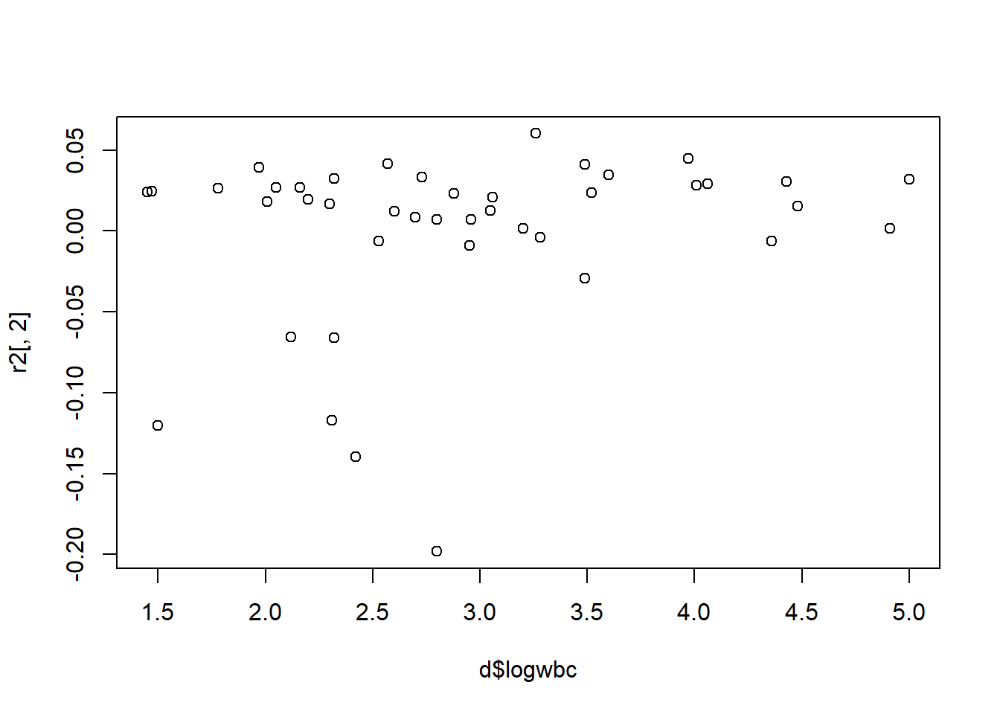

Survival Analysis
Estimated Survival Functions
In the textbook Applied Survival Analysis, Second Edition (David W. Hosmer 2008), the authors explore data from the Worcester Heart Attack Study (WHAS). The goal of the study was to investigate factors associated with survival following myocardial infarction (heart attacks) among residents of Worcester, Massachusetts. At the time of the book’s publication, the study had over 11,000 subjects. The authors explore a subset of just 100 subjects for teaching purposes. In this section we replicate some of their analyses.
We read in the data file, set admission date and follow-up date as a Date class, and set gender as a factor.
whas <- read.table("data/whas100.dat")
names(whas) <- c("id", "admitdate", "foldate", "los", "lenfol", "fstat",
"age", "gender", "bmi")
whas$admitdate <- as.Date(whas$admitdate, format = "%m/%d/%Y")
whas$foldate <- as.Date(whas$foldate, format = "%m/%d/%Y")
whas$gender <- factor(whas$gender, labels = c("Male", "Female"))
head(whas, n = 10) id admitdate foldate los lenfol fstat age gender bmi
1 1 1995-03-13 1995-03-19 4 6 1 65 Male 31.38134
2 2 1995-01-14 1996-01-23 5 374 1 88 Female 22.65790
3 3 1995-02-17 2001-10-04 5 2421 1 77 Male 27.87892
4 4 1995-04-07 1995-07-14 9 98 1 81 Female 21.47878
5 5 1995-02-09 1998-05-29 4 1205 1 78 Male 30.70601
6 6 1995-01-16 2000-09-11 7 2065 1 82 Female 26.45294
7 7 1995-01-17 1997-10-15 3 1002 1 66 Female 35.71147
8 8 1994-11-15 2000-11-24 56 2201 1 81 Female 28.27676
9 9 1995-08-18 1996-02-23 5 189 1 76 Male 27.12082
10 10 1995-07-22 2002-12-31 9 2719 0 40 Male 21.78971The “lenfol” variable is follow up time in days. This is how long subjects were in the study. The “fstat” variable is vital status, where dead = 1 and alive = 0. In the data above, subject 1 was in the study for 6 days until they died. Subject 10 was in the study for 2,719 days and was alive when they left the study. This latter subject is “censored”, meaning they did not experience the event of interest.
A study that is analyzed using survival analysis typically has an observation period during which subjects are enrolled and observed, or it concerns a window of time where objects are observed. When a subject or object is censored, that means they didn’t experience the event during the observation period. It does not mean they will never experience the event. A key assumption of survival analysis is that the censoring is uninformative and not related to when the subject will experience the event.
The Kaplan-Meier (KM) curve is the workhorse function for
visualizing and describing survival data over time. This method was
published by Edward Kaplan and Paul Meier in 1958. We can create a KM
curve using the survfit() function from the {survival}
package (Therneau 2024). To do this, we
need to define survival time data using the Surv()
function. The first argument is survival time, the second argument is
the censoring indicator. Values with “+” appended are censored values.
These are subjects that were alive at the end of their time in the
study.
library(survival)
Surv(whas$lenfol, whas$fstat) [1] 6 374 2421 98 1205 2065 1002 2201 189 2719+ 2638+ 492
[13] 302 2574+ 2610+ 2641+ 1669 2624 2578+ 2595+ 123 2613+ 774 2012
[25] 2573+ 1874 2631+ 1907 538 104 6 1401 2710 841 148 2137+
[37] 2190+ 2173+ 461 2114+ 2157+ 2054+ 2124+ 2137+ 2031 2003+ 2074+ 274
[49] 1984+ 1993+ 1939+ 1172 89 128 1939+ 14 1011 1497 1929+ 2084+
[61] 107 451 2183+ 1876+ 936 363 1048 1889+ 2072+ 1879+ 1870+ 1859+
[73] 2052+ 1846+ 2061+ 1912+ 1836+ 114 1557 1278 1836+ 1916+ 1934+ 1923+
[85] 44 1922+ 274 1860+ 1806 2145+ 182 2013+ 2174+ 1624 187 1883+
[97] 1577 62 1969+ 1054 The survfit() function has formula and
data arguments, so we can directly use the variable names
in the Surv() function. The ~ 1 says we want
to fit a single survival curve for the entire data set. Calling
plot() on the fitted object produces an estimate of a
survival function for the data.
fit <- survfit(Surv(lenfol, fstat) ~ 1, data = whas)
plot(fit, xlab = "Survial Time (days)",
ylab = "Estimated Survival Probability",
mark.time = TRUE)
Starting at the far left of the plot, we estimate a probability of 1
that subjects survive to day 0. By day 500, the probability of survival
drops to about 0.75. The dashed lines around the solid line are 95%
confidence limits. We estimate the probability of survival to day 500 to
be about [0.68, 0.85] with 95% confidence. The little markers represent
censored observations. These can be suprressed by setting
mark.time = FALSE.
We can call summary() on the fitted object to get
specific predicted probabilities. For example, we can look at days 0,
500, 1000 and 1500. It appears subjects have about [0.54, 0.73]
probability to survive to 1500 days after a heart attack.
summary(fit, times = c(0,500,1000,1500))Call: survfit(formula = Surv(lenfol, fstat) ~ 1, data = whas)
time n.risk n.event survival std.err lower 95% CI upper 95% CI
0 100 0 1.00 0.0000 1.000 1.000
500 76 24 0.76 0.0427 0.681 0.848
1000 72 4 0.72 0.0449 0.637 0.814
1500 63 9 0.63 0.0483 0.542 0.732With such long periods of time, it may be more natural to consider
years instead of days. We can either convert days to years in our data
and re-fit the model, or we can use the xscale and
scale arguments in plot() and
summary(), respectively. Let’s try the latter approach
where we set the arguments to 365.25 (i.e., the number of days in a
year).
plot(fit, xlab = "Survial Time (years)",
ylab = "Estimated Survival Probability",
xscale = 365.25, mark.time = TRUE)To get predicted probabilities for years 0 through 6, we need to set
scale = 365.25 and multiply the times of interest by
365.25.
summary(fit, times = 365.25* c(0:6), scale = 365.25)Call: survfit(formula = Surv(lenfol, fstat) ~ 1, data = whas)
time n.risk n.event survival std.err lower 95% CI upper 95% CI
0 100 0 1.000 0.0000 1.000 1.000
1 80 20 0.800 0.0400 0.725 0.882
2 75 5 0.750 0.0433 0.670 0.840
3 68 7 0.680 0.0466 0.594 0.778
4 64 4 0.640 0.0480 0.553 0.741
5 58 6 0.580 0.0494 0.491 0.685
6 14 5 0.505 0.0537 0.410 0.622How does survival differ between men and women? We can estimate a survival function for each group and create a plot as follows:
fit2 <- survfit(Surv(lenfol, fstat) ~ gender, data = whas)
plot(fit2, xlab = "Survial Time (days)",
ylab = "Estimated Survival Probability", col = 1:2,
mark.time = TRUE)
legend("topright", col = 1:2, lty = 1, legend = c("Male", "Female"))
The {survminer} package makes creating such a plot a little easier
(Kassambara, Kosinski, and Biecek 2021).
Simply call the ggsurvplot() function on the fitted object.
Setting conf.int = TRUE adds a confidence ribbon for each
group.
library(survminer)
ggsurvplot(fit2, conf.int = TRUE)It appears males have an expected higher probability of survival
following a heart attack, though the overlapping confidence bands
suggest some uncertainty in this observation. We can formally test for a
difference in the survival functions using the log-rank test, which is
available via the survdiff() function.
survdiff(Surv(lenfol, fstat) ~ gender, data = whas)Call:
survdiff(formula = Surv(lenfol, fstat) ~ gender, data = whas)
N Observed Expected (O-E)^2/E (O-E)^2/V
gender=Male 65 28 34.6 1.27 3.97
gender=Female 35 23 16.4 2.68 3.97
Chisq= 4 on 1 degrees of freedom, p= 0.05 The null hypothesis of this test is no difference in the estimated
survival functions. Small p-values provide evidence against this
hypothesis. With p = 0.05, it seems this difference in survival between
males and females could be real. However, as we see in the plot, the
confidence bands overlap throughout the range of the data. Calling
summary() on the model object for years 1 - 5 shows an
overlap in 95% confidence intervals at every year.
summary(fit2, times = 365.25* c(1:5), scale = 365.25)Call: survfit(formula = Surv(lenfol, fstat) ~ gender, data = whas)
gender=Male
time n.risk n.event survival std.err lower 95% CI upper 95% CI
1 55 10 0.846 0.0448 0.763 0.939
2 52 3 0.800 0.0496 0.708 0.903
3 48 4 0.738 0.0545 0.639 0.853
4 45 3 0.692 0.0572 0.589 0.814
5 41 4 0.631 0.0599 0.524 0.760
gender=Female
time n.risk n.event survival std.err lower 95% CI upper 95% CI
1 25 10 0.714 0.0764 0.579 0.881
2 23 2 0.657 0.0802 0.517 0.835
3 20 3 0.571 0.0836 0.429 0.761
4 19 1 0.543 0.0842 0.401 0.736
5 17 2 0.486 0.0845 0.345 0.683Clearly we should be cautious before stating with certainty that men survive longer than women after heart attacks.
Cox Proportional Hazards Model
The text Survival Analysis (David G. Kleinbaum 2005) presents a study that followed 42 leukemia patients in remission. The patients were randomly assigned to maintenance therapy with either “6-MP” (a new treatment) or placebo. 21 subjects were assigned to each group. The event of interest was “coming out of remission.” (B et al. 1963)
Below we load the data and look at the first five rows.
d <- readRDS("data/leuk.rds")
head(d) survt status sex logwbc rx
1 35 0 1 1.45 trt
2 34 0 1 1.47 trt
3 32 0 1 2.20 trt
4 32 0 1 2.53 trt
5 25 0 1 1.78 trt
6 23 1 1 2.57 trtVariables definitions:
- survt (time in weeks; time until coming out of remission)
- status (0 = censored, 1 = came out of remission)
- sex (0 = female, 1 = male)
- logwbc (log transformed white blood cell count)
- rx (treatment or placebo)
The rx variable has two levels, “trt” and “placebo”. Notice below that the “trt” level is the reference, or baseline, level.
levels(d$rx)[1] "trt" "placebo"Some questions of interest:
- Does the 6-MP treatment increase time until “failure”?
- Do we need to control for log WBC?
- Is the treatment effect the same for males and females?
To answer these questions we’ll use Cox Proportional Hazards (PH) Modeling.
The {survival} package provides the coxph() function for
fitting Cox PH models. We use the function as we would lm()
or glm(), but with the left-hand side requiring the use of
the Surv() function.
Below we model time-to-remission as a function of rx and save as
m1 and then use summary() to request the model
summary.
library(survival)
m1 <- coxph(Surv(survt, status) ~ rx, data = d)
summary(m1)Call:
coxph(formula = Surv(survt, status) ~ rx, data = d)
n= 42, number of events= 30
coef exp(coef) se(coef) z Pr(>|z|)
rxplacebo 1.5721 4.8169 0.4124 3.812 0.000138 ***
---
Signif. codes: 0 '***' 0.001 '**' 0.01 '*' 0.05 '.' 0.1 ' ' 1
exp(coef) exp(-coef) lower .95 upper .95
rxplacebo 4.817 0.2076 2.147 10.81
Concordance= 0.69 (se = 0.041 )
Likelihood ratio test= 16.35 on 1 df, p=5e-05
Wald test = 14.53 on 1 df, p=1e-04
Score (logrank) test = 17.25 on 1 df, p=3e-05The coefficient we’re usually most interested in is the one labeled “exp(coef)”. This is the hazard ratio. The interpretation above is that the hazard of failure for those on “placebo” is about 4.8 times higher than the hazard of failure for those on “treatment”. The next section shows a 95% confidence interval on the hazard ratio. The hazard of failure for those on placebo is plausibly anywhere from 2 to 10 times higher than the hazard of failure for the trt group.
The statistic labeled “Concordance” reports the fraction of all pairs of subjects where the model correctly predicts the individual with the earlier event. Values in the 0.50 - 0.55 range suggest a flip of a coin would do as well as our model at correctly ordering pairs of subjects. The value of 0.69 (+/- 0.04) is promising but not excellent.
The three tests at the end test the null that all model coefficients are simultaneously equal to 0. These are usually all in agreement. When these disagree, go with the Likelihood Ratio Test (Hosmer et al, p. 79)
We can use our Cox PH model to create covariate_adjusted survival
curves. To do so, we need to first use the survfit()
function on the model object. Notice we need to set the covariate values
to create the curves. Below we specify we want a curve for each level of
rx.
sfit1 <- survfit(m1, newdata = data.frame(rx = c("trt", "placebo")))Now we’re ready to make the plot using the ggsurvplot()
from the {survminer} package (Kassambara,
Kosinski, and Biecek 2021).
library(survminer)
ggsurvplot(sfit1, data = d)Notice this plot assumes proportional hazards and uses all the data. Compare to the Kaplan-Meier curve below, which only uses the data in each treatment group and does not assume proportional hazards. Recall the KM curve is non-parametric and descriptive.
fit2 <- survfit(Surv(survt, status) ~ rx, data = d)
ggsurvplot(fit2)As before we can use the summary() method on the survfit
object to see the specific survival probabilities at specific times. The
“survival1” column refers to level “trt” and the “survival2” column
refers to level “placebo”. The probability of staying remission for the
trt group is much higher (0.633) than the placebo group (0.110).
summary(sfit1, times = c(5,10,15,20))Call: survfit(formula = m1, newdata = data.frame(rx = c("trt", "placebo")))
time n.risk n.event survival1 survival2
5 35 9 0.915 0.652
10 23 9 0.803 0.347
15 15 6 0.685 0.162
20 10 2 0.633 0.110The Cox PH model assumes that the hazard ratio is constant over time. The model for the leukemia data above implies the hazard of failure on placebo is about 4.8 times higher than the hazard of failure on treatment, no matter how long we observe the subjects. Notice the summary output above makes no reference to time.
Fortunately the {survival} package makes it easy to assess these
assumptions using the cox.zph() function. Use it on your
model object. The null hypothesis is the hazard ratios are independent
of time. A small p-value is evidence against the null hypothesis. The
proportional hazard assumption is probably safe if the p-value is higher
than, say, 0.05.
cox.zph(m1) chisq df p
rx 0.0229 1 0.88
GLOBAL 0.0229 1 0.88Each variable is tested. The GLOBAL test is that all variables
simultaneously satisfy the proportional hazards assumption. In
this case they’re the same since we only have one predictor. Set
global=FALSE to suppress the global test.
A visual check of the proportional hazards assumption is available
using the plot() method. A smooth trend line is plotted
through residuals versus time. A fairly straight line indicates the
proportional hazards assumption is likely satisfied. The dashed lines
are +/- two standard error confidence bands for the smooth line. We
would like to be able to draw a straight line through the middle of the
confidence bands. This implies the model predictions, which are relative
hazards, are staying consistent over time.
plot(cox.zph(m1))The ggcoxzph() function from the {survminer} package
makes a slightly fancier plot that includes the result of the hypothesis
test.
ggcoxzph(cox.zph(m1))
In our previous model we only looked at the effect of “rx” on time to failure. We may also want to adjust for white blood cell count (“logwbc”). This is a known prognostic indicator of coming out of remission for leukemia patients. Indeed we can see an association between “survt” (time-to-failure) and “logwbc”, for those subjects who experienced the event (status = 1).
plot(survt ~ logwbc, data = d, subset = status == 1)Below we add the variable “logwbc” (log-transformed white blood cell count) to the model. This allows us to estimate placebo and treatment effects on patients with similar white blood cell counts.
m2 <- coxph(Surv(survt, status) ~ rx + logwbc, data = d)
summary(m2)Call:
coxph(formula = Surv(survt, status) ~ rx + logwbc, data = d)
n= 42, number of events= 30
coef exp(coef) se(coef) z Pr(>|z|)
rxplacebo 1.3861 3.9991 0.4248 3.263 0.0011 **
logwbc 1.6909 5.4243 0.3359 5.034 4.8e-07 ***
---
Signif. codes: 0 '***' 0.001 '**' 0.01 '*' 0.05 '.' 0.1 ' ' 1
exp(coef) exp(-coef) lower .95 upper .95
rxplacebo 3.999 0.2501 1.739 9.195
logwbc 5.424 0.1844 2.808 10.478
Concordance= 0.852 (se = 0.04 )
Likelihood ratio test= 46.71 on 2 df, p=7e-11
Wald test = 33.6 on 2 df, p=5e-08
Score (logrank) test = 46.07 on 2 df, p=1e-10Adjusted for white blood cell count, it appears the hazard of failure for subjects on placebo is about 4 times higher than the hazard of failure for subjects on treatment. Likewise, adjusted for rx, the hazard of failure increases by about a factor of 5 for each one unit increase in logwbc. (In this case, that’s probably not an interpretation we’re interested in. We simply want to adjust for subjects’ white blood cell count.)
Adjusting for logwbc reduces the effect of rx about 12%. This is a sign that logwbc may be confounded with rx, and that we should include it in our model.
coef(m2)[1]/coef(m1)[1]rxplacebo
0.8816572 The confidence interval on the rx hazard ratio is also tighter (more precise) in the model with logwbc.
Model 1 without logwbc CI width (upper bound - lower bound):
10.81 - 2.147 = 8.663
Model 2 with logwbc CI width (upper bound - lower bound):
9.195 - 1.739 = 7.456
We can formally compare models using the anova()
function. The null hypothesis of this test is that the models are
equally adequate. The test below suggests we should keep logwbc in our
model.
anova(m1, m2)Analysis of Deviance Table
Cox model: response is Surv(survt, status)
Model 1: ~ rx
Model 2: ~ rx + logwbc
loglik Chisq Df Pr(>|Chi|)
1 -85.008
2 -69.828 30.361 1 3.587e-08 ***
---
Signif. codes: 0 '***' 0.001 '**' 0.01 '*' 0.05 '.' 0.1 ' ' 1We should assess the proportional hazards assumption again. Recall this assumption applies to all predictors in the model.
cox.zph(m2) chisq df p
rx 8.27e-05 1 0.99
logwbc 4.00e-02 1 0.84
GLOBAL 4.02e-02 2 0.98plot(cox.zph(m2))Or using ggcoxzph()
ggcoxzph(cox.zph(m2))
Once again we can visualize our Cox PH model creating survival curves
for particular groups of interest. As before we specify the
groups in a new data frame. Below we specify two groups: a treated group
with median logwbc and placebo group with median logwbc. We then call
ggsurvplot() on the survfit object.
nd <- data.frame(rx = c("trt", "placebo"), logwbc = median(d$logwbc))
sfit2 <- survfit(m2, newdata = nd)
ggsurvplot(sfit2, data = nd, conf.int = FALSE)We could also survival probabilities for the “trt” group with
different logwbc levels. Notice the ggsurvplot() offers a
legend.labs argument to change the legend labels. We set
the confident interval off for demo purposes, but setting it to TRUE
reveals the enormous uncertainty in these estimates.
nd <- data.frame(rx = "trt", logwbc = c(2.5,3,3.5))
sfit3 <- survfit(m2, newdata = nd)
ggsurvplot(sfit3, data = nd, conf.int = FALSE,
legend.labs = paste(nd$rx, nd$logwbc))
Let’s add the sex variable to our model. It is binary (1 = male, 0 = female). Perhaps our analysis plan specified that we would adjust for sex. This means retaining the sex variable regardless of significance. Below the coefficient is slightly positive, suggesting a higher hazard of failure for males. But the standard error is large and the z statistic is small. We’re not sure what effect sex has on time to failure. Nevertheless we opt to keep it in the model.
m3 <- coxph(Surv(survt, status) ~ rx + logwbc + sex, data = d)
summary(m3)Call:
coxph(formula = Surv(survt, status) ~ rx + logwbc + sex, data = d)
n= 42, number of events= 30
coef exp(coef) se(coef) z Pr(>|z|)
rxplacebo 1.5036 4.4978 0.4615 3.258 0.00112 **
logwbc 1.6819 5.3760 0.3366 4.997 5.82e-07 ***
sex 0.3147 1.3698 0.4545 0.692 0.48872
---
Signif. codes: 0 '***' 0.001 '**' 0.01 '*' 0.05 '.' 0.1 ' ' 1
exp(coef) exp(-coef) lower .95 upper .95
rxplacebo 4.498 0.2223 1.8204 11.113
logwbc 5.376 0.1860 2.7794 10.398
sex 1.370 0.7300 0.5621 3.338
Concordance= 0.851 (se = 0.041 )
Likelihood ratio test= 47.19 on 3 df, p=3e-10
Wald test = 33.54 on 3 df, p=2e-07
Score (logrank) test = 48.01 on 3 df, p=2e-10Now let’s assess the proportional hazards assumption for all variables. The null is all variables satisfy the assumption. It appears we have evidence against the null for the sex variable.
cox.zph(m3, global = FALSE) chisq df p
rx 0.036 1 0.85
logwbc 0.142 1 0.71
sex 5.420 1 0.02Likewise the plot shows a curvy line. We use var = "sex"
to see just the plot for sex.
plot(cox.zph(m3), var = "sex")One way to address a violation of the proportional hazards assumption is with a stratified Cox model. The general idea is to group the data according to the strata of a variable that violates the assumption, fit a Cox PH model to each strata, and combine the results into a single model. The coefficients of the remaining variables are assumed to be constant across strata. We might think of them as “pooled” estimates.
A drawback of this approach is the inability to examine the effects of the stratifying variable. On the other hand, we may view it as a unique feature that allows us to adjust for variables that are not modeled. Stratification is most natural when a covariate takes on only a few distinct values (like sex), and when the effect of the stratifying variable is not of direct interest.
We can implement a stratified Cox model by wrapping the variable to
stratify on in the strata() function. Notice that sex is no
longer reported in the model. Since we stratified on it, we do not
estimate its effect. Also, the effects of rx and logwbc are assumed to
be the same for males and females. This is called the no-interaction
assumption.
m4 <- coxph(Surv(survt, status) ~ rx + logwbc + strata(sex), data = d)
summary(m4)Call:
coxph(formula = Surv(survt, status) ~ rx + logwbc + strata(sex),
data = d)
n= 42, number of events= 30
coef exp(coef) se(coef) z Pr(>|z|)
rxplacebo 0.9981 2.7131 0.4736 2.108 0.0351 *
logwbc 1.4537 4.2787 0.3441 4.225 2.39e-05 ***
---
Signif. codes: 0 '***' 0.001 '**' 0.01 '*' 0.05 '.' 0.1 ' ' 1
exp(coef) exp(-coef) lower .95 upper .95
rxplacebo 2.713 0.3686 1.072 6.864
logwbc 4.279 0.2337 2.180 8.398
Concordance= 0.812 (se = 0.059 )
Likelihood ratio test= 32.06 on 2 df, p=1e-07
Wald test = 22.75 on 2 df, p=1e-05
Score (logrank) test = 30.8 on 2 df, p=2e-07We can test the no-interaction assumption by fitting a new model that
allows the stratification to interact with the other variables, and then
comparing this more complex model to the previous no-interaction model
using a likelihood ratio test via anova(). The null is no
difference in the models.
m5 <- coxph(Surv(survt, status) ~ (logwbc + rx) * strata(sex),
data = d)
summary(m5)Call:
coxph(formula = Surv(survt, status) ~ (logwbc + rx) * strata(sex),
data = d)
n= 42, number of events= 30
coef exp(coef) se(coef) z Pr(>|z|)
logwbc 1.2061 3.3406 0.5035 2.396 0.0166 *
rxplacebo 0.3113 1.3652 0.5636 0.552 0.5807
logwbc:strata(sex)sex=1 0.5366 1.7102 0.7352 0.730 0.4655
rxplacebo:strata(sex)sex=1 1.6666 5.2942 0.9295 1.793 0.0730 .
---
Signif. codes: 0 '***' 0.001 '**' 0.01 '*' 0.05 '.' 0.1 ' ' 1
exp(coef) exp(-coef) lower .95 upper .95
logwbc 3.341 0.2993 1.2452 8.962
rxplacebo 1.365 0.7325 0.4524 4.120
logwbc:strata(sex)sex=1 1.710 0.5847 0.4048 7.226
rxplacebo:strata(sex)sex=1 5.294 0.1889 0.8562 32.735
Concordance= 0.797 (se = 0.058 )
Likelihood ratio test= 35.83 on 4 df, p=3e-07
Wald test = 21.69 on 4 df, p=2e-04
Score (logrank) test = 33.15 on 4 df, p=1e-06Compare the interaction model with the no-interaction model.
anova(m4, m5)Analysis of Deviance Table
Cox model: response is Surv(survt, status)
Model 1: ~ rx + logwbc + strata(sex)
Model 2: ~ (logwbc + rx) * strata(sex)
loglik Chisq Df Pr(>|Chi|)
1 -55.735
2 -53.852 3.7659 2 0.1521It appears the simpler no-interaction model is sufficient.
Finally, we can re-check the proportional hazards assumption of the stratified model.
cox.zph(m4) chisq df p
rx 0.148 1 0.70
logwbc 0.318 1 0.57
GLOBAL 0.478 2 0.79The stratified Cox PH model is commonly used in practice to adjust for multiple sites in large clinical trials.
Again we can plot adjusted survival curves for the variables we modeled. Below we create four adjusted survival curves with logwbc held at the median value of 2.8.
- Female, trt
- Female, placebo
- Male, trt
- Male, placebo
Notice we create the first plot for females by using the
suvfit indexing method. Rows 1 and 2 of the new data are
for females, so we select just those rows using
sfit4[1:2].
nd <- expand.grid(rx = c("trt", "placebo"), sex = 0:1)
nd$logwbc <- median(d$logwbc)
sfit4 <- survfit(m4, newdata = nd)
ggsurvplot(sfit4[1:2], data = d, legend.labs = c("trt", "placebo"),
title = "Female")And we can create a plot for males using sfit4[3:4]
ggsurvplot(sfit4[3:4], data = d, legend.labs = c("trt", "placebo"),
title = "Male")When it comes to survival analysis, it’s important to check if any subjects have high leverage or influence.
- Leverage: unusually large or small variables relative to rest of data
- Influence: removal would significantly change the model coefficients
High leverage itself is not necessarily a concern, however a subject with leverage may influence the estimation of model coefficients.
Residuals are central to model diagnostics. Residuals are the difference between what we observe and what the model predicts. However, “there is no obvious analog to the usual ‘observed minus predicted’ residual used with other regression methods.” (Hosmer et al, p. 170) Recall that we deal with censored observations (i.e,, no observed value). This complicates matters. Instead, different types of residuals have been developed based on martingale theory. The math behind these residuals is difficult and we will take it on faith that it works.
To assess leverage, we can use score residuals. Each subject in a Cox PH model will have a separate score residual for each variable in the model. The larger a score residual for a particular variable (in absolute value), the larger the “leverage”.
We can extract score residuals using the residual()
function with type = score. Below we request score
residuals for model m4. Notice there is a separate residual for
each variable in the model.
r <- residuals(m4, type = "score")
head(r) rxplacebo logwbc
1 0.05268608 0.20516809
2 0.05424031 0.20713737
3 0.15674055 0.16790181
4 0.25322991 -0.04327465
5 0.08511958 0.22574242
6 0.02729922 0.35266769For continuous variables, we can plot the score residual versus the variable. Below we check the logwbc residuals. We appear to have four subjects with unusually large residuals (in absolute value).
plot(r[,"logwbc"] ~ d$logwbc)For categorical variables, we can create boxplots of the score residuals versus the variable. Again we have a few outlying subjects we should investigate.
boxplot(r[,"rxplacebo"] ~ d$rx)For logwbc, we could check which subjects have a score residual less than -0.5
i <- which(r[,"logwbc"] < -1) # select rows
i19 26 37 41
19 26 37 41 Likewise we can check the rx score residuals.
j <- which(r[,"rxplacebo"] < -0.4)
j15 19 21
15 19 21 Subject 19 appears in both results. We can inspect the records for
these subjects as follows. The union() function basically
prevents subject 19 from appearing twice below.
d[union(i,j),] survt status sex logwbc rx
19 6 1 0 2.31 trt
26 12 1 0 1.50 placebo
37 4 1 1 2.42 placebo
41 1 1 1 2.80 placebo
15 10 1 0 2.96 trt
21 6 1 0 3.28 trtSubject 19 appears to stand out by being in the treatment group but experiencing “failure” at only 6 weeks.
To assess influence, we can use scaled score residuals, also known as “dfbetas”. Each subject in a Cox PH model will have a separate dfbeta for each variable in the model. The larger a dfbeta for a particular variable (in absolute value), the larger the “influence”.
We can extract score residuals using the residual()
function with type = "dfbeta". Below we request dfbetas for
model m4. Again, notice there is a separate residual for each variable
in the model.
r2 <- residuals(m4, type = "dfbeta")
head(r2) [,1] [,2]
1 0.010989342 0.024076432
2 0.011329959 0.024303307
3 0.034473951 0.019245951
4 0.056961970 -0.006142143
5 0.018179881 0.026381557
6 0.004702614 0.041640090These residuals are simply the score residuals multiplied by the
model covariance matrix, which can be obtained with the function
vcov().
# Use %*% for matrix multiplication
head(residuals(m4, type = "score") %*% vcov(m4)) rxplacebo logwbc
1 0.010989342 0.024076432
2 0.011329959 0.024303307
3 0.034473951 0.019245951
4 0.056961970 -0.006142143
5 0.018179881 0.026381557
6 0.004702614 0.041640090Again we can use scatter plots and box plots to investigate influence.
plot(r2[,2] ~ d$logwbc)
The same four subjects seem to stand out:
which(r2[,2] < -0.1)19 26 37 41
19 26 37 41 boxplot(r2[,1] ~ d$rx)And the same three subjects appear to have outlying dfbeta values for rx.
which(r2[,1] < -0.1)15 19 21
15 19 21 Once again subject 19 appears in both residual sets as having a large residual relative to the rest of the data.
To find out how variables are influencing a model, we need to drop them and refit the model. With such a small data set, we would want to think carefully before permanently dropping subjects. However, let’s say we want to see how much subject 19 is influencing the model. We can refit the model without subject 19 and calculate the change in the rx coefficient.
m4a <- coxph(Surv(survt, status) ~ rx + logwbc + strata(sex),
data = d[-19,])
coef(m4a)["rxplacebo"]/coef(m4)["rxplacebo"]rxplacebo
1.146543 With subject 19 removed from the model, the coefficient estimate for rx increases by almost 15%, which makes the treatment look even better. This doesn’t mean we should drop the subject. It just helps us understand the impact a single subject has on our model. The decision to drop subjects should be carefully considered and not made based on just residual values.